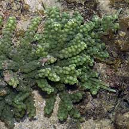
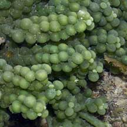
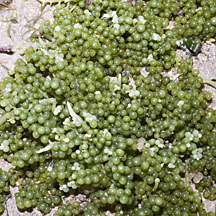
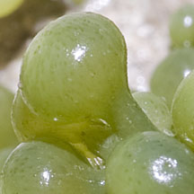
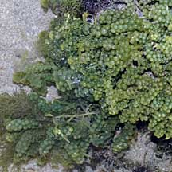
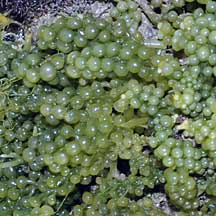
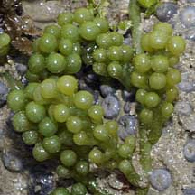
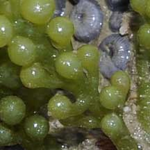
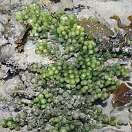
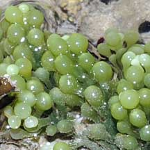

|
|
| green seaweeds text index | photo index |
| Seaweeds > Division Chlorophyta > Family Caulerpaceae > genus Caulerpa |
|
Oval
sea grapes seaweed Caulerpa racemosa* Family Caulerpaceae updated Oct 2016 Where seen? This juicy looking seaweed is made up of little balls and is commonly seen on our Southern shores on rocks and coral rubble in small clumps. In Singapore, it does not form extensive blooms. Elsewhere, it is said to form meadows in front of mangroves. Features: The seaweed resembles bunches of little grapes. Each bunch about 2-8cm long, with bead-like shapes (the 'grapes') arranged on a vertical 'stem'. The 'grape' (about 0.5cm diameter) spherical or club shaped with rounded tips. The shapes may be densely or sparsely packed. These bunches of 'grapes' emerge from a long horizontal 'stem' that creeps over hard surfaces or just under the sand. It grows on coral rubble or on rocks, sometimes extending onto the sand. Colours range from green to yellowish-green and bluish-green. Some other Caulerpa species may take forms that resemble Oval sea grapes. These include Caulerpa peltata, Caulerpa macrophysa. There are varieties of Caulerpa racemosa with bell-shaped tips (Caulerpa racemosa var turbinata) or flat like little umbrellas (Caulerpa racemosa var peltata). Sometimes confused with Round sea grape seaweeds (Caulerpa lentillifera). Here's more on how to tell apart the sea grapes seaweeds. Human uses: This seaweed is eaten in some places. In the Philippines, it is eaten fresh as a salad, or salted so it can be eaten later. Small quantities are also exported to Japan. It is also eaten in Malaysia and Indonesia. It is also reported to have antibacterial and antifungal properties, and to be used to treat high blood pressure and rheumatism. The seaweed is also fed to livestock and fish. However, some Caulerpa species produce toxins to protect themselves from browsing fish. This also makes them toxic to humans. This seaweed is considered an alien invasive species in the Mediterranean. |
 Pulau Jong, Jul 07   Cyrene Reef, Jul 11 |
 Labrador, Jun 05 |
 |
 |
*Species are difficult to positively identify without close examination of internal parts. On this website, they are grouped by external features for convenience of display.
| Oval sea grapes on Singapore shores |
| Photos of Oval sea grapes for free download from wildsingapore flickr |
| Distribution in Singapore on this wildsingapore flickr map |
 Pulau Biola, May 10  |
 Terumbu Berkas, Jan 10  |
 Pulau Senang, Aug 10  |
Links
|